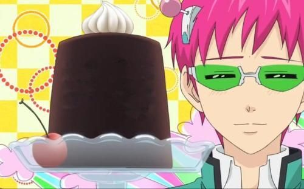

Coffe Jelly That Even Saiki Kusuo Would Love

Ingredients
Whipped Cream or Ice Cream ( both optional)
Instructions
- In a bowl brew the coffee by mixing coffee powder, sugar and hot water together.
- In another bowl place the gelatin and slowly pour the coffee mixture and mixing immediately until its combined well.
- Pour the combined mixture into a dessert cup.
- Regrigerate for 4 hours.
- Top coffee jelly with whipped cream or ice cream (optional).